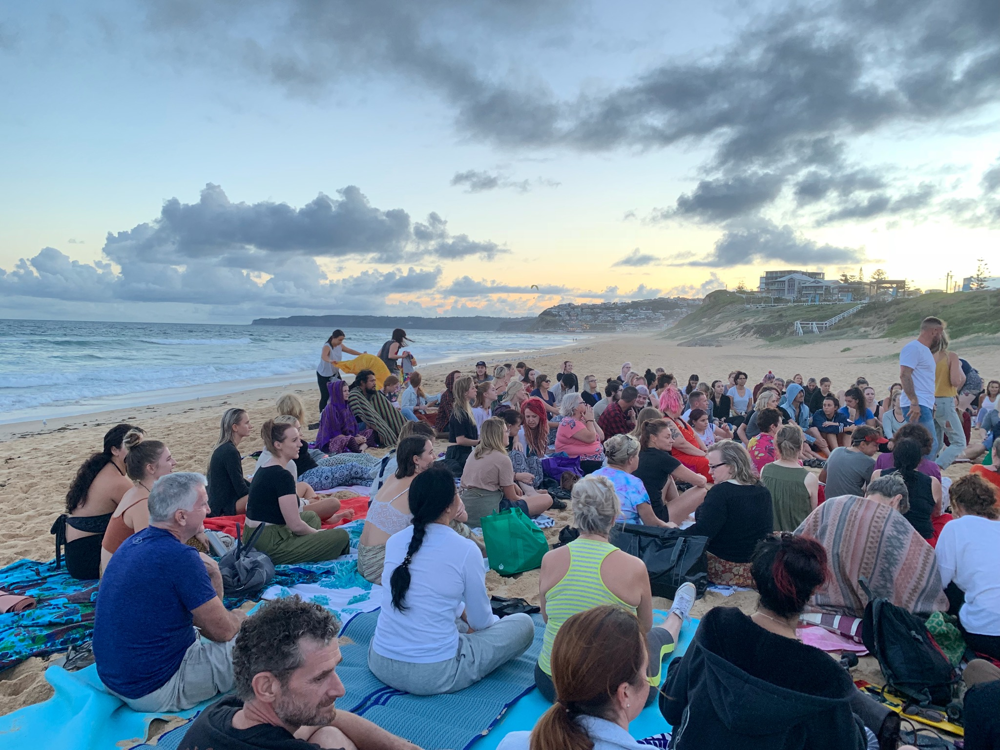

Two Month Mark
There are a lot of experiences that mess with your perception of time. Running a marathon, watching a movie, the list goes on and on. The well-worn adage tells us that time flies when we’re having fun. I mean, its a popular quote for a reason, but it’s a little bit limiting.
As I type this, time is ticking forward, slowly bringing the start of week six. If anyone is doing the quick math right now, no its not week six of my trip, but week six of classes. With only seven weeks left before final exams, I think I can say I’ve settled into life here.
A few things that I have learned about my university so far; some majors only last three years. They are well renowned for their engineering department, and frankly I can see why. I also learned that most engineering majors like to take three courses at a time to keep their workload balanced. Coming from the US, I was used to taking more than five classes in addition to working 10 hours a week, so I figured I could handle the four classes with loads of free time to spare. Well, to my surprise, taking four different third year engineering courses has not been a cakewalk.
Unintentionally I loaded myself with one of the most intense schedules possible for any student, not even just for exchange students. The option was either that, or to not come to Aus at all, so frankly I’m not too upset.
My point with all of this is not for pity, but to say that with so much work, I wouldn’t expect time to fly so fast. Working an average of 10 hour days during the week doesn’t exactly sound like a good time. Its not like I’m skimping on my workload either, I honestly think I been more academically challenged this semester than I ever have in the US. That’s all good, but am I even enjoying my time?
Absolutely.
I’ve fallen into a balanced routine. Studies, cooking, athletics, social events, and travel have all fallen into their own spots.
Rock climbing is still going well, but I also still don’t have video documentation (Sorry Mom!). The pickup volleyball group has inspired a bit of confidence and taught me a bunch. I’ve got a lot to work on, but my spike is looking pretty sharp. I’ve gotten back into running regularly, and hopefully can get my 5k time back to the teens. I can cook at least four meals from scratch that will impress the average joe. There’s plans in the works for a trip to Tasmania and the outback, with more to come! I’ve hosted brunches and attended dinner parties, gone out for drinks and everything between.
Since I last wrote, I’ve been on a handful of fun trips. First was a three day extravaganza in Sydney, capped by a rainy boat party in the Sydney harbor.


Getting off the beaten path a little bit, me and my friends made it to Shoal Bay.


After the initial lure of canyoning, I couldn’t stay away from it for too long.


I tried my hand at pub TV trivia. I was outclassed by Haley and Saugat in my knowledge of Brooklyn 99 and only got a little bit of the show spoiled.
When surrounded by beaches, who doesn’t attend a public full moon meditation at sunset?

You can’t say you’ve partied until you’ve been at a silent disco. Its like a concert with 2 DJ’s playing at once, and if you take off your headphones you can hear everyone singing out of tune:
Of course, behind all of these pictures are countless stories, ruined sleep schedules, and good times with a great group of friends.


Even though I feel like I’ve done so much, I can remember showing up like it was yesterday. When you’re not constantly thinking about it, but rather spending your time and energy on things you enjoy, its no wonder that you forget to keep track of time.